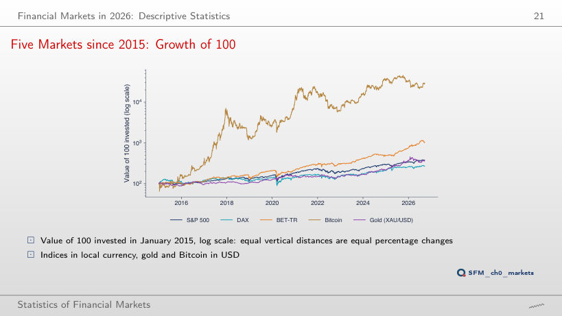
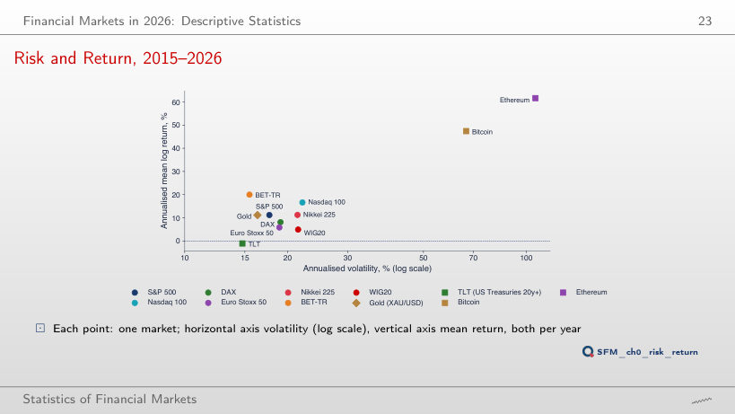
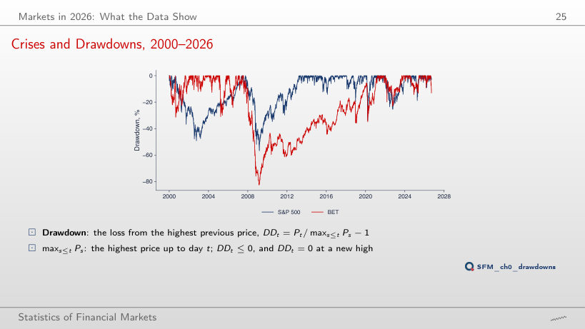
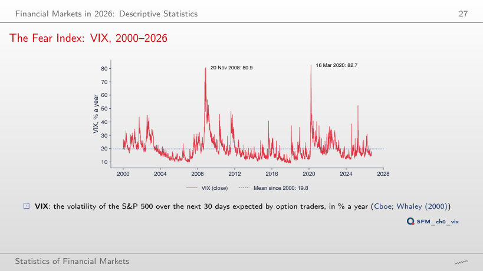
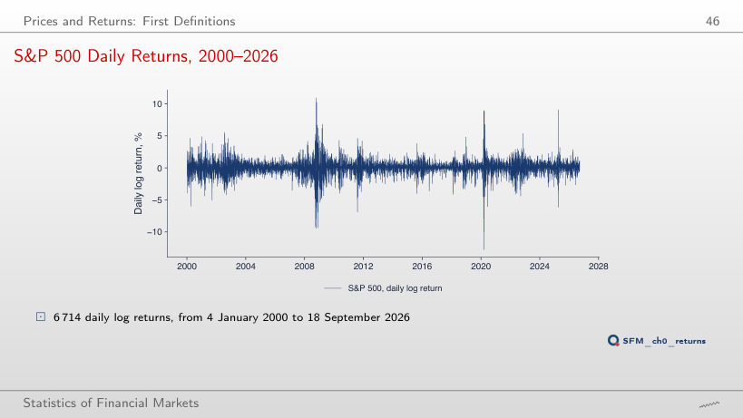
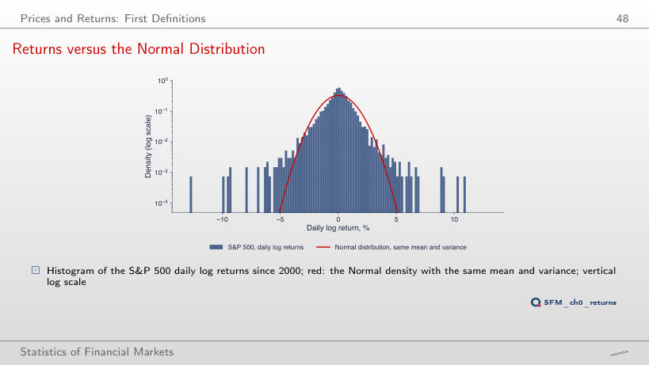

The slide of the lecture is on the left, the same figure on the right, computed in the browser from the same data. The ▶ button moves the parameter step by step. Abbreviations: DAX (Deutscher Aktienindex, the index of the Frankfurt Stock Exchange), BET (Bucharest Exchange Trading, the benchmark index of the Bucharest Stock Exchange), BET-TR (BET total return, with dividends reinvested), WIG20 (the index of the 20 largest companies on the Warsaw Stock Exchange), TLT (an ETF of US Treasury bonds with maturities over 20 years), ETF (exchange-traded fund), VIX (Cboe Volatility Index, the S&P 500 volatility expected by the options market), SE (standard error), GARCH (generalised autoregressive conditional heteroskedasticity).
Markets in 2026: What the Data Show · From Prices to Returns: a First Look
Markets in 2026: What the Data Show
Five Markets since 2015: Growth of 100

Answer
Bitcoin: −9.0% a year (100 becomes 86), although in the window from 2015 it had the highest return, 47.4%; in the window from 2025 the BET-TR leads with 44.0%. Over short windows the ranking depends almost entirely on the start date: a mean return estimated over less than two years is very imprecise.
Risk and Return, 2015–2026

Answer
Below zero: −7.8% a year with a volatility of 68.9%, below the S&P 500 (9.9%) and the BET-TR (26.2%). The chart does not prove that higher risk brings higher return: the points are averages of one sample. The standard error of an annual mean return over Y years is σ/√Y; for the S&P 500 since 2015, 17.7/√11.7 = 5.2 percentage points, for Bitcoin 19.5 points.
Crises and Drawdowns, 2000–2026

Answer
In 2021, on 16 March, more than 13 years later; the S&P 500 had regained its peak of 9 October 2007 on 28 March 2013. From the trough of 25 February 2009 (−82.5%) the BET needed a gain of 473%, a 5.7-fold rise; the S&P 500, after −56.8%, a gain of 131%. After a loss x, recovery needs a gain of x/(1 − x).
The Fear Index: VIX, 2000–2026

Answer
The empirical probability is 88.2%, although only 9.3% of the days since 2000 close above 30. High-volatility days come in episodes (74 episodes above 30, the longest 170 trading days long): this is volatility clustering, modelled with GARCH in Chapter 9.
From Prices to Returns: a First Look
S&P 500 Daily Returns, 2000–2026

Answer
It falls to less than half: from 97.4% (7 April 2020) to 45.6% (16 July 2009). A long window mixes crisis days with calm days and smooths the peaks. For every window, between 6.0% and 6.7% of the days fall outside the band ±2 rolling standard deviations, against 4.6% for the Normal distribution.
Returns versus the Normal Distribution

Answer
It grows enormously: at 4 standard deviations, 46 days against 0.43 expected (108 times as many); at 6 standard deviations, 12 days against 0.000013 (about 906,000 times as many). The tail of the Normal distribution falls much faster than the tail of the returns, so risk computed with the Normal distribution is underestimated in the tails (Chapters 2, 5 and 10).
Course data in data/market (source: EODHD), daily closes up to 18 September 2026, each series on its own calendar: the five markets and the eleven markets of the risk–return chart from January 2015, the S&P 500, the BET and the VIX from January 2000. The browser recomputes the growth of 100, the annualised returns and volatilities, the drawdowns, the VIX statistics, the rolling volatility, the histogram and the number of days in the tails. Other start dates of the window, other thresholds and other rolling windows are extra runs of the same computation.